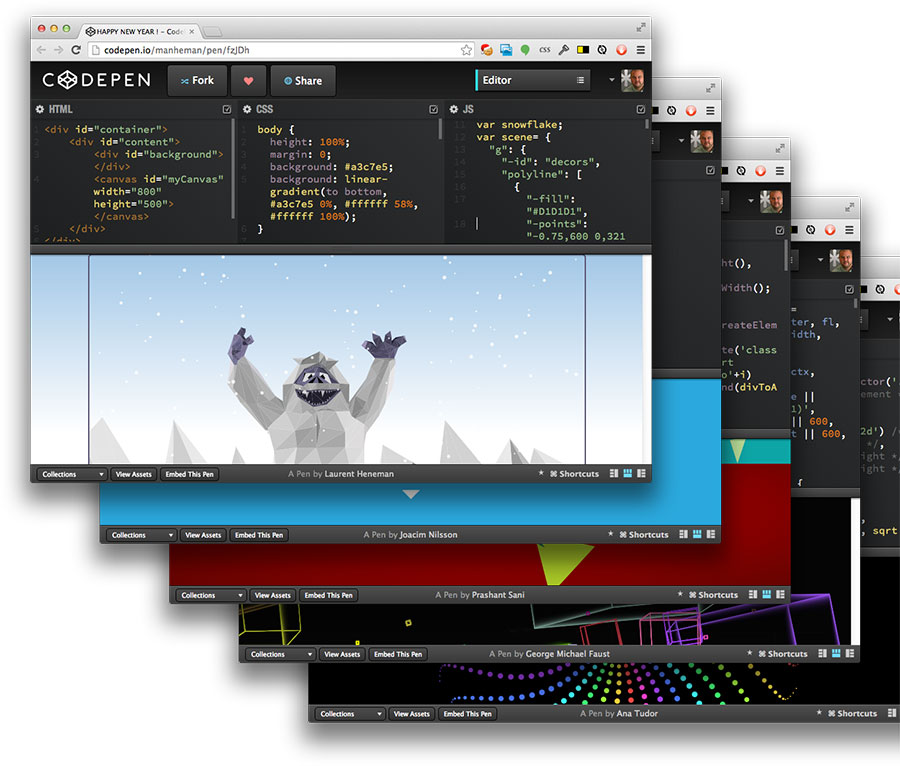
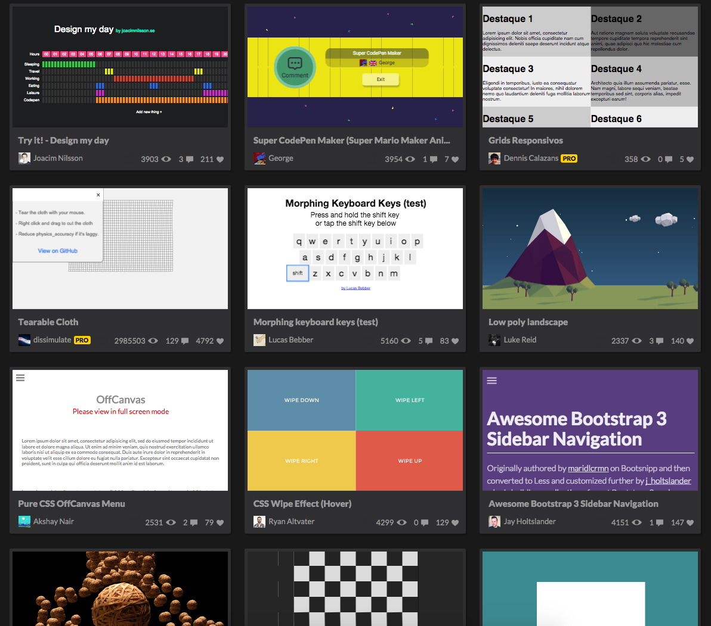

Forget Productivity, Just Have Fun.
By: Blake Tarter
@itsblaketarterPresentation can be found on my github.
About this Presentation
I built this using reveal.js
Super simple Presentation framework using pure dom elements.
About me
Born and raised in KC.
Work at codekoalas.
Went to college to be a designer.
Design = fun
Development = ++fun
See the Pen Web Audio Synth by Blake Tarter (@blaketarter) on CodePen.
See the Pen Morse Code Generator by Blake Tarter (@blaketarter) on CodePen.
See the Pen Material Design Chat by Blake Tarter (@blaketarter) on CodePen.
Back to the talk
CodePen is a fantastic tool for productivity during and outside of work, but that’s not what this talk is about.
Mental Fatigue
Mental fatigue can be caused by continual mental effort and attention on a particular task, as well as high levels of stress or emotion. Basically, any mental process that goes into overload can result in this disorder.- http://www.betterhealthusa.com/public/235.cfm
We’ve all been there
Good News
There are a few easy solutions to this.
A healthy diet
No Subway doesnt count..
Regular Exercise
Sitting down all day is bad, go figure..

Bad News
None of those things have to do with developmnet, and I love development.
Solution
This may seem obvious, but I've found that simple, small, and creative projects that I work on periodically can really help relieve some stress and lighten my morale while keeping me focused when I do actual work.
You can't use up creativity. The more you use, the more you have.- Maya Angelou
Enter CodePen
Using CodePen you can quickly, and easily start up some creative projects without worrying about saving, hosting or setting up some gruntfile (or gulpfile).
Not to mention the endless supply of creative inspiration.
I like making pens that are simple, and usually pretty quick.
Using them as a kind of mental break.
See the Pen Random Box Art with Canvas by Blake Tarter (@blaketarter) on CodePen.
See the Pen Random Circle Art by Blake Tarter (@blaketarter) on CodePen.
See the Pen KC Animation by Blake Tarter (@blaketarter) on CodePen.
As an added bonus sometimes while messing around I will find some solutions to problems I end up using elsewhere.
While CodePen may work for some of us, others may be at the point where they are nearing a complete burnout. All I have to say to them is take some time for themselves and don't forget to sleep.
To close it out, ill leave you with a random CodePen I made a day ago.
See the Pen How Many Ways Can You Skin A Cat? by Blake Tarter (@blaketarter) on CodePen.